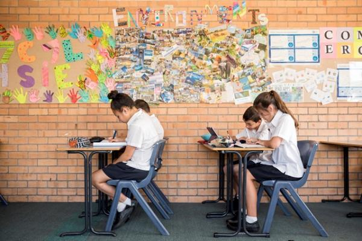

Advice for teachers following a suicide

Download the tips for teachers following a suicide factsheet
Suicide is a difficult topic to talk about and deal with, particularly after the suicide of a student.
Despite this, talking with students about what has happened is a very important step in helping them cope with the trauma and grief associated with suicide. Talking to students and listening to their concerns can also help to highlight students who may be having difficulty coping, and who could benefit from some extra support from wellbeing staff or other professionals.
Teachers can feel uncertain about their role in engaging with students following a suicide. In these times it is ok to talk about suicide in and outside of the classroom in response to the needs of students. In the classroom, the discussion of suicide may come up at unexpected times and could be seen to take up valuable teaching time.
Discussing suicide should not be made into a prohibited topic. Teachers are encouraged to acknowledge what has happened and reiterate that this type of trauma is likely to affect people in different ways. It is important to include messages that outline options to seek help and positive coping in these discussions.
Here are some tips to assist you in both discussing suicide with students and also in knowing when to refer a student to a school wellbeing staff member for further support.
Do:
Listen to students if they want to talk. It is important for students to feel that they can talk with a trusted adult about how they are feeling or what they are experiencing. By making a student feel listened to and supported, they are more likely to be open about their risk and discussing options for accessing further help
Be empathetic. This is very important in helping students feel supported. It helps demonstrate that you are listening and can reflect some understanding of what the young person is feeling or experiencing. However it’s also important to be aware of clear boundaries and to know when it’s time to refer the student on to wellbeing staff
Maintain normal routine as much as possible. This is important for both you and your students. Having routine provides some certainty and comfort which is often temporarily lost when any traumatic event occurs. Maintaining routine will also help to minimise students excessively engaging in discussion around the suicide which may increase their distress.
Guide a discussion about suicide if you think it is necessary. If you notice students are distracted and consumed by the topic of suicide it may be appropriate to facilitate a class discussion about what has occurred. If you deem this is appropriate, it should be time limited to between 5-10 minutes and focus on messages of accessing help, and healthy coping strategies. Additionally, you may need to limit how many conversations of this nature take place. It is also important to try and dispel any rumours circulating about the student’s suicide and explain that rumours are likely to increase their own distress.
Be aware of risk factors. Having a basic awareness of risk factors will assist you in being able to identify students who may be at risk. If you are concerned about any students or identify students who you believe to be at risk, it is necessary to refer them to school wellbeing staff. Having an idea of risk factors may also assist in alleviating your anxiety around which students may or may not be at risk.
Don't:
Take on the role of being a counsellor. Unless qualified, this is not your role. Students will need your support and understanding following the suicide. However, it is important only professionally trained staff explore and manage more complex and significant issues related to a student’s level of distress and ability to cope.
Do anything that makes you feel uncomfortable. If you do not feel comfortable engaging with students on this sensitive subject, ask for assistance from wellbeing staff that are trained in this area
Guarantee confidentiality to a student if you are concerned about their safety. If you are concerned about a student you need to communicate this to them as well as letting them know that you will be referring them to wellbeing staff. If a student asks you not to disclose any information relating to their safety or another student’s safety, you need to inform them that keeping them safe is part of your job and that you are required to pass on this information to the appropriate people. Being transparent with students is essential to maintain their trust and respect.
Allow the whole class time discussion to be focused on suicide. Whilst you may recognise students’ need to discuss the suicide, it is important to contain this to a limited period within class time. Some students may feel the need to discuss the suicide; others may find this more distressing. If you choose to have a class discussion about it, make sure students understand that the next 5-10 minutes will be allocated to this discussion and that the remainder of the class time will be focused on the learning content.
Make assessments or diagnose. It is not your role to assess or diagnose students. This should only be done by professionals with appropriate training. When discussing a student with wellbeing staff it may be most useful to describe changes in their behaviour or other observed behaviours.
Marginalised Groups and Youth Suicide
Suicide is a difficult topic for many people, however for young people who identify as being part of a marginalised group such as Culturally and Linguistically Diverse (CALD), Aboriginal and Torres Strait Islander (ATSI) or Lesbian Gay Bisexual Transgender Intersex (LGBTI), there are additional considerations to be aware of. When thinking about issues related to youth suicide it is very important to be aware of the unique needs of these groups and respond in the most appropriate way.
If you believe that a young person is at imminent risk of suicide, you should seek professional support from your local mental health service or emergency department and keep the young person safe until help arrives. Remove any means of suicide available to them in the immediate vicinity, such as medications or weapons. Stay with the young person (or arrange for supervision) until they can be seen and assessed by a professional.
For more information on suicide or support and assistance visit headspace.org.au/schoolsupport or headspace.org.au